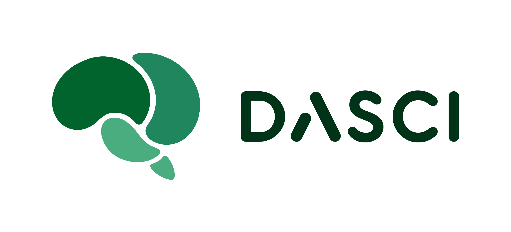

Bases de la Convocatoria de los Premios Cátedra Endesa–UGR en Inteligencia Artificial 2025
Oct 16, 2025
The Signal Processing and Biomedical Applications (SiPBA) research group is one of the leading research groups in statistical signal processing, analysis and machine learning applied to medical imaging. With an extensive background in signal processing, we are currently developing several lines of research that include neurodegenerative diseases, autism and cancer.

Check out the latest Papers , Conferences , News , and More »
The SiPBA Research Lab is part of the University of Granada, Spain. by University of Granada.


SiPBA © 2025 by SiPBA is licensed under CC BY-NC 4.0